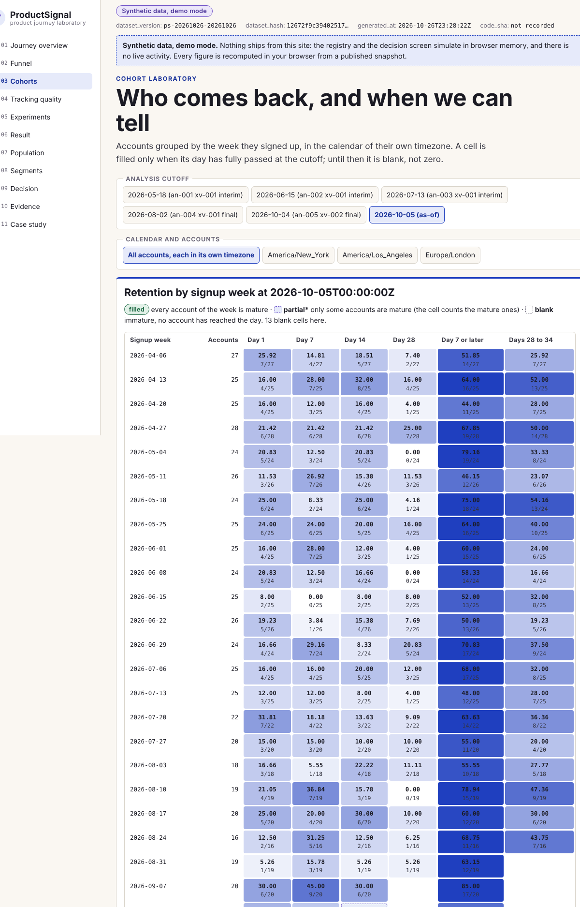
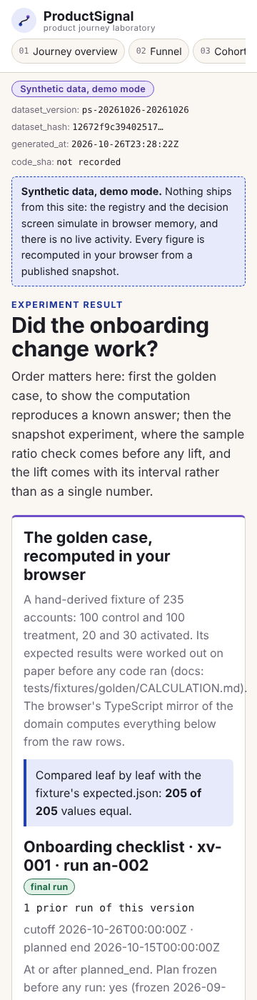

[ Work ]Dashboard · Product analytics · Experimentation · FastAPI · ReactCase 229 / 236
Should the Onboarding Change Ship, Stop, or Get More Investigation?
ProductSignal: a product-journey laboratory where the experiment read is built before the dashboard. Accounts are the randomisation unit, the primary analysis is intention to treat, the sample ratio is checked before any lift is shown, the plan is frozen before any outcome is read, interim runs are labelled interim, and retention is measured on exact calendar days in the account's timezone. The known answer: 20 of 100 control accounts and 30 of 100 treatment accounts activate within seven days, a 10-point lift whose 95% interval runs from −2.0 to +21.7 points, so the result is not conclusive. Synthetic data; project 06 of the Business Data Lab.
What needed answering
The onboarding experiment review argues about a dashboard. Users are counted where accounts were randomised; the result is read on day 10 of a 28-day plan and called final; a sample-ratio mismatch nobody checked sits under the lift; a cohort that signed up three days ago shows a seven-day activation rate; a segment that happened to look good is reported as the finding; and retention is one number that means exact day 7 on one page and "any time after" on another.
ProductSignal fixes the measurement first: one account-level unit, intention to treat with exposure reported beside it, the sample ratio checked before any effect is shown, a plan frozen before outcomes are read with every analysis run logged as interim or final, cohorts that only mature when their window is complete, retention measured on exact calendar days in the account's timezone, segments labelled exploratory with their multiplicity, and a decision that is ship, stop or inconclusive and never a product release.
The build
Two implementations of one contract, checked against a hand calculation and each other.
- The contract: canonical events received by the cutoff and deduplicated, with bots, internal accounts and unknown identities excluded and counted; identity links that apply forward in time only; the account as the unit of randomisation and retention, with user events rolled up before any ratio; activation within seven days of signup on a half-open window with inclusive maturity; day-7 retention on the exact local calendar day in the account's timezone, with on-or-after-day-7 and week-4 kept separate; a versioned funnel in strict order with a maximum gap; intention to treat with the exposure rate beside it; a chi-square sample-ratio check with a verdict for too few assignments; Wilson and Newcombe intervals computed without floating point; relative lift null when the control is zero; a frozen plan whose hash every run cites; interim runs that can never support a ship; and a cutoff rule under which no assignment, exposure or subscription dated after the cutoff counts.
- A known-answer fixture written first: 20 of 100 control and 30 of 100 treatment accounts activate, giving 0.200000 and 0.300000, +10.00 points, relative 0.500000, a Newcombe interval of −0.020249 to 0.216734 and a sample-ratio statistic of 0; a retention cohort of 20 with 5 returning on exact day 7 (two of them only because of their timezone; seven more accounts count in on-or-after-day-7 only, four of them returning on day 8); a funnel of 15, 10, 8 and 5; eleven identity links of which one attributes an event, one duplicate, one delayed event, one bot and one internal account; plus a rejected variant (an exposure before its assignment and a conflicting second assignment) and an empty variant. A standard-library script reproduces all 706 checks, including the intervals and the chi-square p-value, from the records.
- The Python domain, PostgreSQL schema and FastAPI commands: validate tracking, resolve identity, define a funnel, assign, record exposure, freeze a plan, check maturity, analyse (sample ratio first, run logged as interim or final), review guardrails and record a decision that never changes product state; 357 tests on a GitHub-hosted runner against PostgreSQL 16, including the twelve adversarial scenarios the specification names and the cutoff rule, and an independent SQL recomputation that agrees with the domain on the fixtures and the snapshot.
- The static site: the same contract in TypeScript with rational arithmetic only (erfc and the Student t quantile in fixed point), a journey overview with a cutoff picker, a funnel with its exclusions, a maturity-aware cohort grid in each account's timezone, an experiment result that shows the sample ratio before any lift and the generator's disclosures beside the figure, a population view of assigned versus exposed, an exploratory segment page with its multiplicity caveat and a decision memo; 2,519 golden and snapshot checks against the Python domain at six cutoffs, 36 review-finding checks and 77 Playwright tests at four widths and 200% zoom.
- A deterministic synthetic world: 26 weeks, one experiment in two versions (the first with 400 accounts in permuted blocks and a true effect of eight points, the second with a designed sample-ratio mismatch), every outcome drawn once, and twelve injected defects (user-level analysis of an account-randomised test, a treatment-dependent exclusion, an interim run presented as final, an immature cohort, duplicate activations, a late event, a backward identity link, an ignored sample-ratio mismatch, cherry-picked segments, zero control conversions, exposure before assignment, mixed retention definitions) published with how each must be handled.
Step by step
- Step 01
The known answer before any volume
Two cohorts of one hundred mature accounts: twenty control and thirty treatment accounts activate within seven days. Conversions 0.200000 and 0.300000, an absolute lift of 10.00 percentage points, a relative lift of 0.500000, and a Newcombe 95% interval from −2.02 to +21.67 points that crosses zero: the counts alone do not make the result conclusive, and the page says so. A standard-library script reproduces every figure, including the Wilson intervals and the chi-square sample-ratio statistic, from the records.
- Step 02
Sample ratio first, then the lift
The observed assignment counts are tested against the prespecified allocation before any effect is displayed. A mismatch is shown in place of the lift and blocks a ship decision; too few assignments to test is its own verdict rather than a pass.
- Step 03
Frozen plan, labelled runs
The primary outcome, guardrails, allocation and horizon are hashed into a frozen plan before the first analysis run. Every run cites the hash and the number of earlier runs; a run before the planned end is interim and cannot support a ship decision.
- Step 04
Two modes, disclosed
Mode A is the backend on a GitHub-hosted runner with a transient PostgreSQL. Mode B is the public site over a published snapshot; the registry and decision screens simulate their actions in browser memory and nothing ships from them.
Results
The cohort grid on the synthetic snapshot (signup weeks from 2026-04-06, each account in its own timezone, at the as-of cutoff of 2026-10-05; the week of 2026-04-13 keeps 7 of 25 accounts on exact day 7 and 16 of 25 on day 7 or later; cells whose day has not passed at the cutoff stay blank):

The experiment result on a phone:

What the data supports. The first version of the onboarding experiment assigned 400 accounts in permuted blocks of four; at its planned end 63 of 200 control and 82 of 200 treatment accounts had activated within seven days, +9.50 points (relative 0.301587) with a 95% interval from +0.08 to +18.69 points, so the final run is conclusive by a hair and the page says so beside the generator's own disclosure that the true designed effect was eight points. Eleven of those 400 accounts fall inside an injected instrumentation gap that suppresses activation events for signups before 2026-04-08 (0 of 5 control and 4 of 6 treatment activated in the drawn truth), so the published lift is lower than the drawn one (+11.50 points, interval +2.02 to +20.69, or +9.96 with the gap accounts excluded); the gap is an injected defect that an independent reviewer found carried into the final result, and it is disclosed here, in the manifest and on the result page beside the figure. At the as-of, week-4 retention is 71 of 200 against 62 of 200 (−4.50 points), the guardrail error rate 31 against 30 of 200, and revenue per assigned account 97.83 against 130.95 USD per arm; the site now computes the difference intervals in the browser (Newcombe for the proportions, Welch for revenue), and all three include zero. At the first interim cutoff only 155 accounts had been assigned (77 and 78), and the page counts only those. The second version, planned at 60/40, observed 62 control and 92 treatment assignments: a chi-square of 25.004329 with p below 0.000001, so the sample ratio is a mismatch and the result is withheld in place of a lift, blocking both ship and stop. Over the window the tracking-quality page counts 124 duplicate events dropped, 237 delayed by more than a day and 30 with an unknown identity; 69.7% of real users are linked to an anonymous visit (now shown on the tracking page). These are the generator's designed relationships and the one-draw realisation, published in its manifest and found by the site; they are not findings about any real product.
Found by review, then fixed. An independent reviewer, briefed to disprove the page, confirmed that "conclusive" ignored whether the plan was frozen; that the sample-ratio p-value always used one degree of freedom while the API accepted three-variant plans; that the SQL reference depended on the session timezone; that an analysis cutoff later than the clock was accepted, so a ship decision could be recorded before the planned end; that assignment, exposure and decision instants were client-controlled, which defeats the cutoff rule; that per-variant outcomes could be read before the plan was frozen; that most refused decisions left no audit row; and that an outcome recorded before assignment counted as a treatment outcome. All of it is fixed on the branch: a result is conclusive only on a final run of a frozen plan with a clean sample ratio and an interval excluding zero, plans have exactly two arms, the server stamps every fact instant with an audited admin backfill, outcomes are withheld until the freeze, every refusal is audited, and only outcomes after assignment count; the regression tests run in Python, SQL, TypeScript and through the API, and the reviewer's thirteen hand-calculated cases agree across all three implementations. The one-account change the pre-assignment rule makes to the second experiment version is disclosed in the contract; the first version's published figures did not move.
Not built yet: the segment page is exploratory only, three-variant plans are refused rather than analysed, and daylight-saving edge cases are unpinned by the fixture.
Next
- Add the screens listed as not built on the site and sequential-testing boundaries for interim reads.
- Pin daylight-saving edge cases and three-variant experiments in the fixture.
- Projects 07 to 10 of the lab follow the same gates.